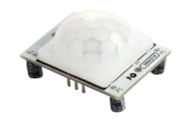
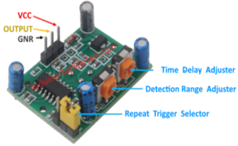
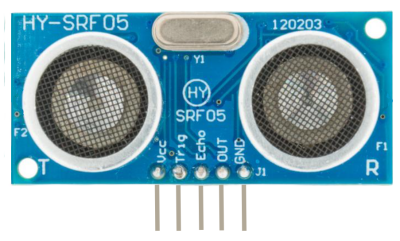
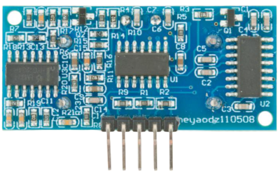

Utseende
Arduino

1. Vad är Arduino?
Arduino är en öppen plattform för hårdvara och mjukvara som möjliggör utveckling av interaktiva elektroniska projekt. Plattformen består av både fysiska mikrokontrollerkort och en programmeringsmiljö (Arduino-IDE) som används för att skriva och ladda upp kod till kortet.
Arduino är mycket mångsidigt och används inom utbildning, hobbyprojekt och även inom professionell utveckling. Det unika med Arduino är att det kombinerar enkelhet med kraftfulla verktyg, vilket gör det möjligt för nybörjare att snabbt komma igång med att utveckla egna projekt.
2. Grundläggande komponenter i ett Arduino-system
2.1 Arduino-kortet
Det vanligaste Arduino-kortet är Arduino Uno, som är baserat på ATmega328P-mikrokontrollern. Detta kort har:
- 14 digitala ingångs- och utgångspinnar,
- 6 analoga ingångar och
- en USB-port för att ansluta till datorn.
Arduino Uno drivs antingen via USB eller med en extern strömkälla, vilket gör det enkelt att använda i olika situationer .Den består av:
- Mikrokontroller - detta är hjärnan i en Arduino, och är den komponent som vi laddar in program i. Se det som en liten dator, designad för att utföra endast ett visst antal saker.
- USB-port - används för att ansluta ditt Arduino-kort till en dator.

- USB till seriellt chip - "USB till seriellt" är en viktig komponent, eftersom det hjälper till att översätta data som kommer från t.ex. en dator till den inbyggda mikrokontrollern. Det är detta som gör det möjligt att programmera Arduino-kortet från din dator.
- Digitala stift - stift som använder digital logik (0 , 1 eller LOW/HIGH). Används vanligtvis för strömbrytare och för att tända/släcka en lysdiod.
- Analoga stift - stift som kan läsa analoga värden i en 10 bitars upplösning (0-1023).
- 5V / 3.3V stift - dessa stift används för att driva externa komponenter.
- GND - även känd som ground, negative eller helt '-', används för att slutföra en krets, där den elektriska nivån är på 0 volt.
- VIN - står för Voltage In, där du kan ansluta externa nätaggregat.
2.2 Strömkällor
Arduino kan drivas på flera olika sätt:
- USB-porten: När du ansluter kortet till din dator med en USB-kabel får det ström direkt från datorn.
- Externa batterier: Om du behöver köra ditt projekt utan att vara ansluten till en dator kan du använda ett batteri. Vanliga spänningar är 9V eller 12V.
2.3 Kopplingsbrädan
En kopplingsbrädan är en kopplingsplatta där du enkelt kan bygga och testa kretsar utan att behöva löda. Du använder hopkopplingsledningar för att ansluta komponenterna på brädan.

2.4 Elektroniska komponenter
Arduino Uno kan användas tillsammans med en mängd olika elektroniska komponenter för att bygga olika typer av projekt. Här är några vanliga komponenter som ofta används med Arduino Uno:
1. Motstånd (Resistors)
Motstånd används för att begränsa strömflödet i en krets, vilket är viktigt för att skydda komponenter som LED-lampor från att skadas av för hög ström.

2. Lysdioder (LEDs)
LED är små lysdioder som lyser när ström flyter genom dem. De används ofta för att ge visuell feedback i projekt, till exempel att indikera när en krets är aktiv.

3. Tryckknappar (Push Buttons)
Tryckknappar används för att ge användarinteraktion, till exempel att starta eller stoppa en process genom att trycka på en knapp.

4. Kondensatorer (Capacitors)
Kondensatorer lagrar elektrisk energi och kan släppa den snabbt. De används för att filtrera bort störningar i en krets eller för att jämna ut strömförsörjningen.

5. Potentiometrar
en potentiometer är ett variabelt motstånd som kan användas för att justera spänning i en krets, ofta för att kontrollera saker som ljusstyrka eller volym.

6. RGB-Lysdiod
Der är en elektronisk komponent som kombinerar tre lysdioder (röd, grön och blå) i en enda enhet. Genom att justera intensiteten på dessa tre färger kan du skapa en mängd olika färger, inklusive vit.

7. Temperatursensorer (t.ex. LM35, DHT11)
Dessa sensorer används för att mäta temperatur och ge den informationen till Arduino, vilket kan användas för att skapa temperaturstyrda system. 
8. Ljudsignalgivare (Buzzer)
En buzzer används för att skapa ljud, vilket kan vara användbart för att ge hörbar feedback i projekt.

9. Servomotorer
Servomotorer används för att styra rotation i en viss vinkel, vilket är användbart i robotik och mekaniska system.

10. DC-motorer (Likströmsmotor)
DC-motorer omvandlar elektrisk energi till mekanisk energi när elektricitet går på dess ledningar. De används för att skapa rotation eller rörelse i mekaniska system, och kan styras av Arduino för att bygga rörliga robotar och maskiner.

11. LCD-skärmar (LCD Displays)
LCD-skärmar kan användas för att visa text och siffror, vilket ger ett sätt att kommunicera information från Arduino till användaren.

12. Transistorer
Transistorer fungerar som strömbrytare eller förstärkare i en krets och används ofta för att styra större laster som motorer eller reläer.

13. Fototransistor
En fototransistor är en ljuskänslig elektronisk komponent som fungerar som en sensor för att detektera ljusnivåer. Den omvandlar ljus till en elektrisk ström, vilket gör det möjligt för Arduino att mäta ljusintensiteten. Fototransistorn kan användas i projekt där man vill en lampa när det blir mörkt eller skapa ljusstyrningssystem. Den ansluts vanligtvis till en analog ingång på Arduino för att läsa av varierande ljusnivåer.
I fototransistor är basterminalen inte tillförd, och istället för basströmmen tas ljusenergin som ingång.

14. PIR-sensor
En PIR-sensor (Passive Infrared Sensor) är en rörelsesensor som används för att detektera närvaro av människor eller djur genom att känna av infraröd strålning från deras kroppsvärme. När sensorn upptäcker rörelse, skickar den en signal till Arduino, vilket kan användas för att aktivera olika funktioner som att tända lampor, starta en kamera eller larma. PIR-sensorer är vanliga i säkerhetssystem och automatiseringsprojekt där rörelsedetektering krävs.


15. Ultraljudssensorer (Ultrasonic Sensors)
Ultraljudssensorer används för att mäta avstånd till objekt genom att skicka ut och ta emot ultraljudsvågor. De används ofta i robotar för att undvika hinder.

